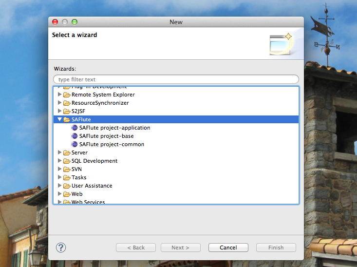
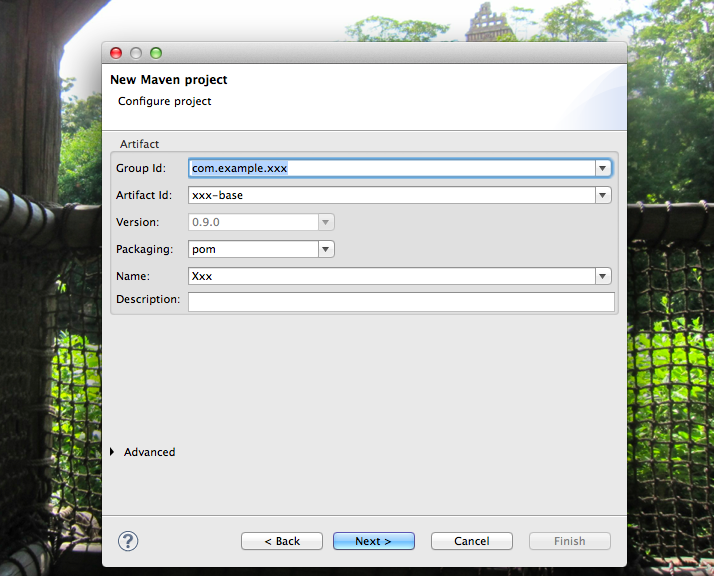
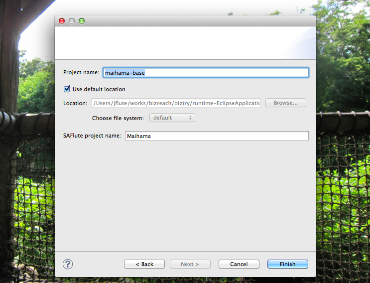
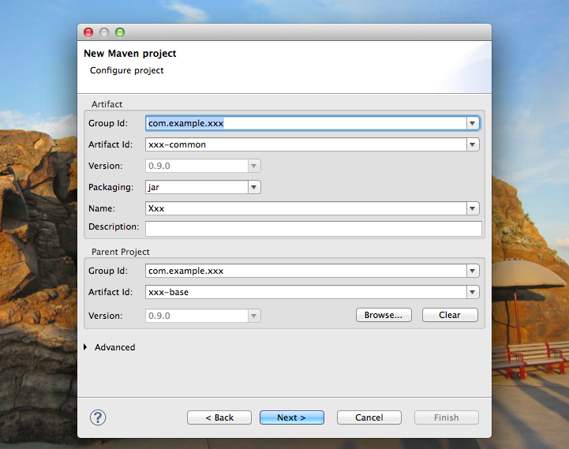
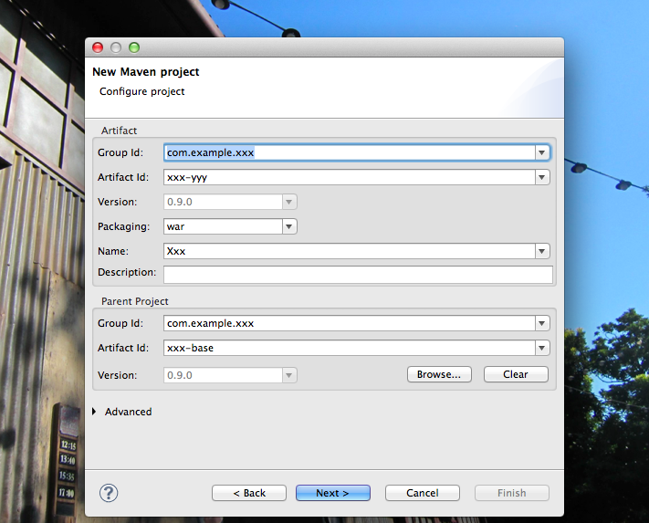
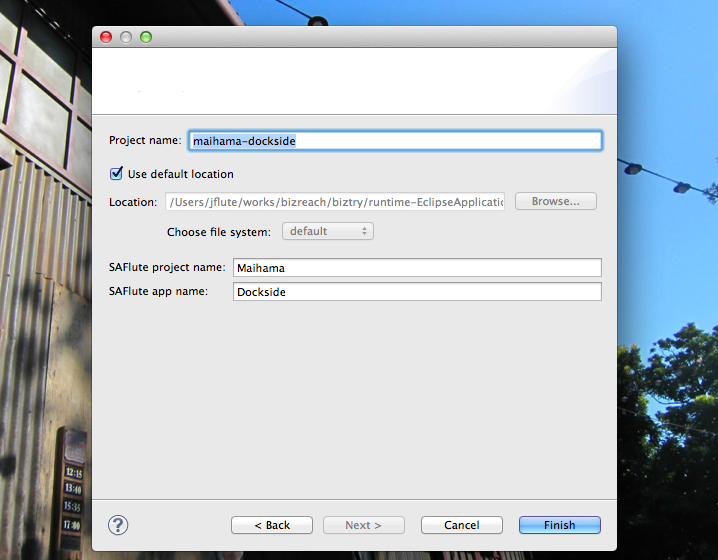

SAFlute Template
SAFlute Templateを使ったSAFluteプロジェクトの環境のセットアップについて。
こちら、すでに Java8 環境で DBFlute-1.1.0 を使うことが前提になっています。
${indexlist}ベタな方法とEclipseプラグイン
SAFluteプロジェクトの環境構築には、大きく二つの方法があります。
ベタな方法
Maihamaプロジェクトをコピーして、Maihama や Dockside な部分をどんどん置換していく方法です。大変ですがとても単純ですし、README_ja.txt に詳しく書いてありますので、ここではもうこれだけにしておきます。(プラグインを使う方がオススメ)
Eclipseプラグイン
有志の方が提供している、SAFluteを使ったプロジェクトを作成するためのEclipseプラグインを利用することができます。 SAFlute Template と言います。
ベタな方法に比べはるかに簡単にプロジェクトを作れるようになっていますので、ぜひご利用ください。 このページでは、この "SAFlute Template" を使った手順をメインに説明します。
いずれにせよ、Maihamaプロジェクトは見ること
ただ、セットアップ後の細かい微調整などのためにも、Maihamaプロジェクトの README_ja.txt は必ず読んでおくと良いでしょう。 また、プラグインでは調整できない部分もありますので、最終的にはMaihamaプロジェクトを参考に理解を深めてアドリブで調整できるようにすると良いでしょう。
SAFlute Template プラグイン
プロジェクト構成
既に実践的な構成のプロジェクトを作成できます。
- baseプロジェクト
- pom.xmlの共通定義を統括するベースプロジェクト
- commonプロジェクト
- 共通ライブラリのプロジェクト、DBFluteの自動生成クラスなど
- webプロジェクト
- WEBアプリのプロジェクト、複数作成可能
SAFlute Template のインストール
以下のリンクからダウンロードできます。(本家からのコピーですので、更新が少し遅れる可能性はあります)
saflute_template-eclipse-plugin.zip (dropins形式)
まずは、SAFluteをclone
SAFluteは、jarとして提供されていないため、ソースコードを直接 clone してきます。(ゆくゆくは切り離して、アプリのものとしてしまいましょう)
baseプロジェクトの作成
ウィザードの選択
パッケージ・エクスプローラーで右クリックして "New" - "Other..." を選択すると、様々なプロジェクト作成の項目の中から SAFlute のウィザードを選ぶことができます。
SAFluteTemplate、ウィザードの選択 
{kind=link}
baseプロジェクトのMaven情報の入力
ウィザードの選択で、SAFlute project-base を選ぶと、baseプロジェクトのMaven情報を入力する画面になります。 ここでは、プロジェクト全体のパッケージなどを入力します。
作成した後で修正の利かない重要な項目(★)は、しっかり吟味して入力しましょう。
- Group ID ★
- グループID、このプロジェクトのJavaのパッケージでもある。※Seasarのrootではない
- 例えば、Maihamaプロジェクトであれば、org.dbflute.maihama となる。
- Artifact ID ★
- アーティファクトID、Eclipseプロジェクト名でもある。
- 例えば、Maihamaプロジェクトであれば、maihama-base となる。
- Name
- pom.xmlの name タグの内容、まあ気の利いた感じに
- Description
- pom.xmlの description タグの内容、まあ気の利いた感じに
SAFluteTemplate、baseプロジェクトのMaven 
{kind=link}
baseプロジェクトの作成
Maven情報の入力を終えて Next すると、baseプロジェクトの作成画面になります。
入力されたMaven情報を元に、既にプロジェクト名が入力されるので、基本的には最後に確認をするだけとなります。 想定通りになっていれば、Finishしましょう。
- Project Name ★
- Eclipseプロジェクトの名前。
- 例えば、Maihamaプロジェクトであれば、maihama-base となる。
- SAFlute project name ★
- Javaのクラスやコメントなどで利用されるプロジェクト名。
- 例えば、Maihamaプロジェクトであれば、Maihama となる。
SAFluteTemplate、baseプロジェクトの作成 
{kind=link}
commonプロジェクトの作成
commonプロジェクトのMaven情報の入力
ウィザードの選択で、SAFlute project-common を選ぶと、commonプロジェクトのMaven情報を入力する画面になります。 (要領は、baseプロジェクトの時と同じです)
作成した後で修正の利かない重要な項目(★)は、しっかり吟味して入力しましょう。
- Group ID ★
- グループID、基本的に base プロジェクトと同じ。
- 例えば、Maihamaプロジェクトであれば、org.dbflute.maihama となる。
- Artifact ID ★
- アーティファクトID、Eclipseプロジェクト名でもある。
- 例えば、Maihamaプロジェクトであれば、maihama-common となる。
- Name
- pom.xmlの name タグの内容、まあ気の利いた感じに
- Description
- pom.xmlの description タグの内容、まあ気の利いた感じに
- Parent Project - Group ID ★
- 親プロジェクトのグループID、base プロジェクトのグループIDを入力。
- Parent Project - Artifact ID ★
- 親プロジェクトのアーティファクトID、base プロジェクトのアーティファクトIDを入力。
SAFluteTemplate、commonプロジェクトのMaven 
{kind=link}
commonプロジェクトの作成
ここちょっとポイントです。(見逃さないでじっくり読んでください)
baseプロジェクトの時と同じように、既にいい感じにプロジェクト名が入力されていますが、一つだけ Yyy という名前になっています。 これは、webアプリプロジェクトの名前です。webアプリは複数作成されることが想定されますが、この時点ではとりあえずその一つの名前を指定することが求められます。 具体的には、DBFluteの FreeGen や PropertiesHTML の設定などで利用されます。
例えば、Maihamaプロジェクトの Dockside ドメイン (maihama-dockside) であれば、Dockside となります。(Yyyで作ってしまうと後で修正が大変なのでここでしっかり)
SAFluteTemplate、commonプロジェクトの作成

ちょっと差分を更新
SAFlute本体は更新されるため、タイミングによって SAFlute Template で出力されるテンプレートとちょっとズレがある可能性があります。 その場合は、SAFlute本体の更新と同時にメンテされるMaihamaプロジェクトを参考に修正してください。
2013/09/08時点にて、国際化対応周りでズレあり。コンパイルエラー箇所において、インターフェースのメソッドを実装すればOKです。 国際化対応しないのであれば、ひとまず空実装で問題ありません。 Java8が出て、インターフェースメソッドのデフォルト実装というのがサポートされれば、こういう問題は回避できるのでしょうか...!?
webプロジェクトの作成
webプロジェクトの情報の入力
ウィザードの選択で、SAFlute project-applicatoin を選ぶと、webプロジェクトのMaven情報を入力する画面になります。 (要領は、commonプロジェクトの時と同じです)
作成した後で修正の利かない重要な項目(★)は、しっかり吟味して入力しましょう。
- Group ID ★
- グループID、基本的に base プロジェクトと同じ。
- 例えば、Maihamaプロジェクトであれば、org.dbflute.maihama となる。
- Artifact ID ★
- アーティファクトID、Eclipseプロジェクト名でもある。
- 例えば、MaihamaプロジェクトのDocksideアプリであれば、maihama-dockside となる。
- Name
- pom.xmlの name タグの内容、まあ気の利いた感じに
- Description
- pom.xmlの description タグの内容、まあ気の利いた感じに
- Parent Project - Group ID ★
- 親プロジェクトのグループID、base プロジェクトのグループIDを入力。
- Parent Project - Artifact ID ★
- 親プロジェクトのアーティファクトID、base プロジェクトのアーティファクトIDを入力。
SAFluteTemplate、webプロジェクトのMaven 
{kind=link}
webプロジェクトの作成
baseプロジェクトの時と同じように、既にいい感じにプロジェクト名が入力されています。
特に問題なければ Finish!
SAFluteTemplate、webプロジェクトの作成 
{kind=link}
DBFluteを動かしてみましょう
DBFluteのダウンロード (クライアントは作成済み)
commonプロジェクトでは、DBFluteクライアントが既にいい感じに作成されています。
ただ、DBFluteエンジンだけは同梱されていないので、dbflute-maven-plugin を実行して、DBFluteエンジンだけをダウンロードしましょう。 ターミナルでcommonプロジェクト直下に行って、mvnコマンドで dbflute:download ゴールを叩きます。 (すると、baseのpom.xmlに定義されているDBFluteランタイムと同じバージョンのDBFluteエンジンがダウンロードされる)
e.g. dbflute:download ゴールを叩く！ @Command
...$ mvn -e dbflute:download
もし、Mavenが利用できない環境であれば、手動でダウンロードすることもできます。zipをダウンロードして、mydbflute配下で解凍します。
最新版のDBFluteへアップグレード
もし、DBFluteのバージョンが最新バージョンでなければ、一緒にアップグレードしてしまいましょう。 そもそも、いま最新版がいくつか？ってのは、DBFluteの最新バージョンのページを見るとわかります。
(つい先ほど dbflute-maven-plugin で現状のバージョンのDBFluteエンジンがダウンロードされていることが前提として) Manageタスク (manage.bat|sh) を叩き、94 (upgrade) を指定して実行すると、最新版のDBFluteエンジンがダウンロードされます。 (mydbflute配下に、想定したバージョンのDBFluteエンジンがダウンロードされていることを確認)
そして、baseプロジェクトの pom.xml のDBFluteランタイムのバージョン (dbflute.versionプロパティ) を、最新版に修正します。 この瞬間、既存クラスがコンパイルエラーになる可能性がありますが、後のクラス自動生成でなくなるのでここでは気にする必要はありません。
データベースの設定 (デフォルトMySQL)
デフォルトでは、以下のような設定になっています。
- DBMS
- MySQL
- スキーマ
- プロジェクト名 + db ※Maihamaプロジェクトなら maihamadb
- ユーザー
- プロジェクト名 + user ※Maihamaプロジェクトなら maihamauser
- パスワード
- プロジェクト名 + word ※Maihamaプロジェクトなら maihamaword
これでよければ、特に気にせず次へ進みましょう。
もし、他のDBMSを使ったり、スキーマの名前やユーザー名を変更する場合は、手動で設定ファイルを修正します。 主な修正ファイルは以下の通りです。
- [project-name]_env.properties
- アプリからつなぐDBの設定 ※ローカル、結合、本番と環境ごとに存在 (ひとまずローカルだけでも修正)
- databaseInfoMap.dfprop
- 自動生成ツールとしてのDBFluteがつなぐDBの設定
- replaceSchemaDefinitionMap.dfprop
- ReplaceSchemaがシステムユーザーでつなぐDBの設定 ※利用しないなら設定をコメントアウト
- replace-schema-00-system.sql
- システムユーザーで実行するDDL ※利用しないなら削除
この時点で、ReplaceSchemaできるはず
デフォルトでは、replace-schema-10-basic.sql に Maihama プロジェクトの DDL が入っています。DBの準備ができていれば、この時点で ReplaceSchema を叩いてスキーマを作成できるはずです。
1.1.0からは、Manageタスク (manage.bat|sh) の 0 番を選択すると ReplaceSchema になります。
失敗した場合は、何かがおかしいです。ReplaceSchemaのログをみながら直していきましょう。
クラス自動生成してみましょう
スキーマができたら、Manageタスクの regenerate (2番) を叩いてみましょう。 クラスの自動生成が一通りうまく動作するはずです。(ここでは既存のMaihamaクラスが上書きされるだけ)
FreeGenを実行してみましょう
Manageタスクの freegen (12番) を叩いて正常終了することを確認してみましょう。 (ここでは既存のConfigクラスやMessagesクラスが上書きされるだけ)
画面を起動してみましょう
Run Jetty Run で起動
Eclipse の Run Jetty Run の設定をして、Webプロジェクトを起動してしてみましょう。 (Run Jetty Run がインストールされてなければ、Eclipse Marketplace からインストール)
Webプロジェクトを右クリックして、Run As - Run Jetty で起動できます。 デフォルトでは8080で起動するかと思います。Run Configurationで細かくカスタマイズできます。 ただし、コンテキストパスは jetty-web.xml にて設定されています。(後で好きなようにカスタマイズしてOK)
ログイン画面を表示してみましょう
/[context-path]/login/ でログイン画面にアクセスすることができます。 placeholderに表示されている通りのパスワードでログインできます。ログイン後に会員一覧画面を動かすことができるはずです。
参考実装としてMaihamaプロジェクトと同じ画面が組み込まれています。(後で削除してもOK)
DB設計して、自分用で再自動生成
さて、ここから、自分用にどんどんカスタマイズしていきます。まずは、DB設計。
ERMaster-b をインストール
こちらからダウンロード: ermaster-b-eclipse-plugin.zip
zipを解凍して、利用している Eclipse の dropins ディレクトリに、ERMaster-b ディレクトリごと放り込みます。 [eclipse-root]/dropins/ERMaster-b/eclipse/plugins/...jar というディレクトリ構成になっていればOKです。 Eclipse を再起動して、Preferences の項目として ERMaster が追加されていればOKです。
※ここでは本家の ERMaster ではなく、改良された ERMaster を利用することを前提とします。
ERMaster-b でDB設計
baseプロジェクトの document/erd/xxxdb.erm を ERMaster-b で開くと、Maimahaプロジェクトのテーブルが存在しています。自分のプロジェクト用に修正しましょう。 (がっつり削除してもいいでしょうし、土台にして修正していってもいいでしょう)
※ermファイルが開けない場合は、ERMaster-b のインストールに失敗しています。
ERMaster-b でDDL出力
ひとまずの段階で、ダイアグラムで右クリックして、エクスポートのDDLを選択します。 commonプロジェクトにある ReplaceSchema の replace-schema-10-basic.sql に出力します。 細かい設定などはデフォルトのままでOKです。
DBFluteプロパティを調整
幾つかのDBFluteプロパティを自分のプロジェクト用に修正します。
- documentDefinitionMap.dfprop
- PropertiesHTMLの設定
- freeGenDefinitionMap.dfprop
- FreeGenの設定
- outsideSqlDefinitionMap.dfprop
- applicationOutsideSqlMapの設定
- refreshDefinitionMap.dfprop
- 自動F5の設定
そして、リニューアル
Manageタスクの renewal (1番) を実行します。
Maihamaの会員テーブルたちを削除しているときは、DBFlute の dfprop から削除されたテーブルの設定を消されないとDBFluteタスクが落ちます。主に、classificationDefinitionMap.dfprop や additionalForeignKeyMap.dfprop たちです。エラー内容を見て適宜消していってください。
それでもなお Manage タスクが失敗している場合は、それ以前に設定か何か環境がおかしいです。 DBFluteのログをみて直していきましょう。
いい感じに修正していきましょう
Maihamaのテーブルを削除した後にリニューアルすると、Exampleとして用意されている会員一覧画面のクラスなどがコンパイルエラーになります。 ここからは、もう自分の世界ですので、いい感じに修正していきましょう。
そして、SAFluteの世界へ
ここからは、もう自分の世界ですので、いい感じに修正していきましょう。
とりあえずは...
秘密鍵をどうにか
秘密鍵を設定しましょう。TODOコメントを探してください。(Eclipseであれば、Tasksビューで探せます)
いますぐでなくてもOKですが、管理方法などアプリで独自にカスタマイズしましょう。
ログインパスワードの暗号化
仮の実装になっています。OneWayCryptoLogicをアプリに合わせた形でカスタマイズしましょう。
他言語対応しますか？
もし、しないなら(日本語だけなら)、そーとーしばらくする予定がないなら、言語ごとの properties ファイルの分割をやめます。(二重管理にならないように、デフォルトを日本語にしてしまいます)
- _ja.properties は削除
- xxx_ja.properties の内容を xxx.properties に移して、_ja の方は全てファイルごと削除
- dfprop の _ja.properties を修正
- documentDefinitionMap.dfprop の propertiesHtmlMap、そして、freeGenDefinitionMap.dfprop にて、xxx_ja.properties と指定されている箇所を xxx.properties に修正
もし、他言語対応する、もしくは、いつかは対応するので意識していくのなら、xxx_ja.properties と xxx.properties の両方に、必ず同じキー項目を追加していきましょう。PropertiesHTMLでズレをチェックできます。
さらにwebプロジェクトを追加する場合
同じように、プラグイン (SAFlute project-application) から追加します。
ただ、DBFluteの FreeGen や PropertiesHTML などの設定は追加されませんので、手動で追加する必要があります。 主な設定追加箇所は以下の通り。
- documentDefinitionMap.dfprop
- PropertiesHTMLの設定
- freeGenDefinitionMap.dfprop
- FreeGenの設定
- outsideSqlDefinitionMap.dfprop
- applicationOutsideSqlMapの設定
- refreshDefinitionMap.dfprop
- 自動F5の設定
わからなければ、聞いてみましょう
SAFlute自体は DBFlute のメインストリームではないため、細かく環境構築の手順を用意しているわけではありません。 もともと、ソースコードを読んで使い方を学んでいくことを前提としていたもので、パッケージとして広く展開することを想定されたものではありません。
ですが、思ったより反応が良く、利用したいという人がわりと増えてきたため、ちょっとずつドキュメントを整備しています。 とはいえ、やはりきめ細かいドキュメントは用意し切れないと考えています。(あくまで優先度は DBFlute 本体の方が高いため)
例外的な要件に対する救済的な説明もありませんし、手順通りやってうまくいくとも限りません。 DBFlute本体のドキュメントではあまり見かけない "いい感じに" という言葉も連呼されます。
なので、わからなければ遠慮なく質問(フィードバック)してみましょう。
SAFluteを使いたいと言ってくれた人の中には、わざわざ jflute に会いに来てくれた方もいらっしゃいました。 希望があれば、勉強会などでも積極的に話題にしていきたいと思います。